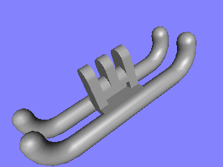
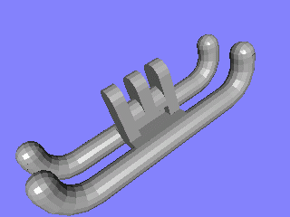
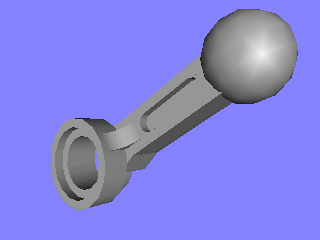
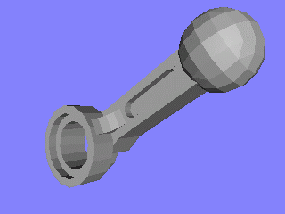
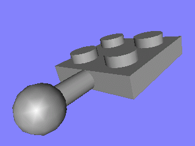
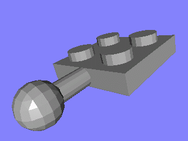
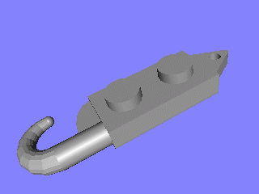
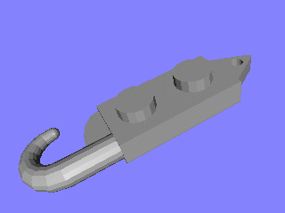

The following shots were all taken to illustrate primitive substitution. The last pair was included to show one of the potential shortcomings of primitive substitution. Note that once the hook starts to taper that it suddenly changes from a smooth cylinder to a faceted shape. This is due to the fact that the tapered region was not (and could not be) modeled using primitives. While it is too small to tell in the screenshots, it switches back to being smooth at the hemispherical tip. This problem can often be overcome by using the Smooth curves option. Examples of that option are provided here. All the other pieces were chosen specifically to illustrate the improvements that primitive substitution can provide. Needless to say, the improvements will not normally be as obvious in an actual model.
| With Primitive Substitution | Without Primitive Substitution |
|---|---|
|  |  |
|  |  |
|  |  |
|  |  |

If you have any comments, questions, or suggestions, please e-mail me at ldview@gmail.com.
LDView and this web page are both Copyright © 2016 Travis Cobbs and Peter Bartfai.
LEGO® and the LEGO logo are registered trademarks of The Lego Group, which does not sponsor, endorse, or authorize this site. You can find the official LEGO website at http://www.lego.com.